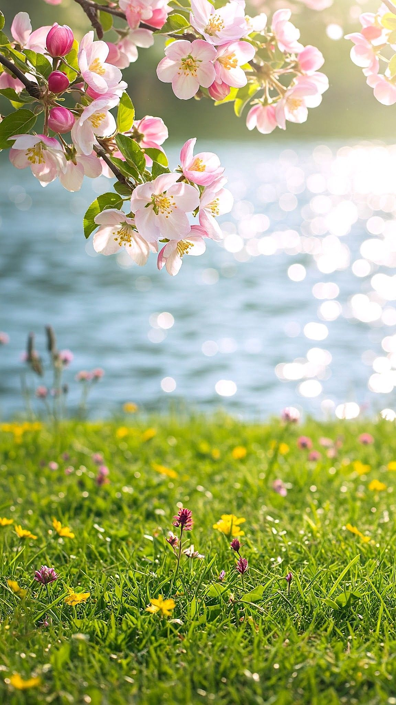

Весна — это время пробуждения природы, когда мир словно
сбрасывает с
себя тяжёлое зимнее одеяло. Солнце начинает светить
ярче, дни становятся длиннее, а воздух наполняется свежестью и едва
уловимым ароматом первых цветов. На проталинах робко
пробиваются подснежники, деревья покрываются нежной зелёной
дымкой, а птицы возвращаются из тёплых краёв, наполняя леса и парки
звонким щебетом. Всё вокруг будто оживает, и даже самые
серые городские улицы преображаются, украшенные молодой листвой и яркими
клумбами.
С приходом весны меняется не только природа, но и настроение людей: хочется
